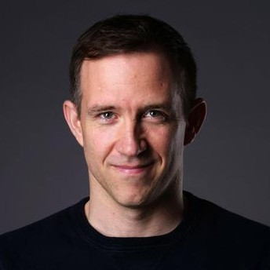

|  |
|
Short Bio
Joseph (Joe) Paton received his undergraduate degree in biology from Tufts University in 2000. In 2008, he received his Ph.D. with distinction from Columbia University in Neurobiology and Behavior, and shortly thereafter joined the Champalimaud Neuroscience Programme, where he was a fellow from 2008 to 2012. He is currently a Principal Investigator and Director of the Champalimaud Neuroscience Programme (CNP) at the Champalimaud Foundation (CF) in Lisbon, Portugal. He is an alumnus of the Simons Foundation on the Global Brain, a Howard Hughes Medical Institute International Research Scholar, and a current holder of a consolidator grant from the European Research Council. His laboratory focuses on the neural mechanisms and computational principles of learning, decision-making, action selection and timing. In the course of trying to understand how the brain combines these functions to produce intelligent behavior, he has increasingly moved into areas that overlap with modern AI research. During his mandate as CNP Director, Paton has also spearheaded the development of a new Digital Therapeutics center at CF, as well as representing CF as a member of the recently announced Centre for Responsible AI.
Abstract of Talk
The brain, broadly speaking, is for control. 600 million years of evolution has endowed nervous systems with a multitude of mechanisms for achieving that control. In vertebrates, mechanisms in the spinal cord and hindbrain are responsible for more automatized forms of control: reflex circuits, central pattern generators, and circuits for movement primitives. These processes can be selected amongst, modulated, and chained together by the descending influence of brain systems positioned more rostrally that possess a rich capacity to learn from experience. It is these more adaptive systems that my laboratory is most interested in understanding. And yet, control by these systems appears to be fundamentally both heterarchical, requiring distinct computations performed by specific brain systems, and hierarchical, with each system operating at varying degrees of abstraction in relation to the immediate physical world. In this talk, I will describe how experiments in my laboratory focused on understanding how neural circuits are provided a temporal basis computation have revealed not only fundamental principles underlying temporal processing, but also signatures of how hierarchies of representations can interact to produce robust policies for behavior, and how distinct aspects of behavioral control appear to be handled by different brain systems.